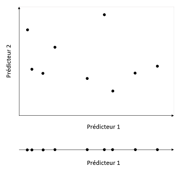
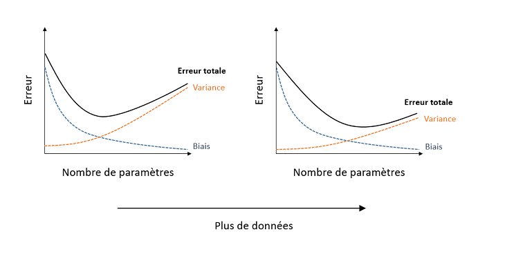
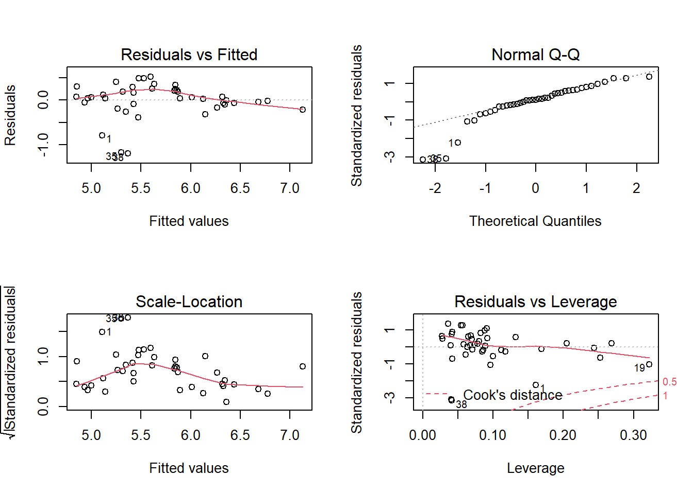

Évaluation et sélection de modèles
26 octobre 2020
Objectifs
Identifier les problèmes dûs à la collinéarité de plusieurs prédicteurs.
Identifier les problèmes liés au sous-ajustement et surajustement de modèles.
Connaître les avantages et inconvénients de différentes méthodes visant à évaluer l’ajustement de modèles.
Utiliser l’AIC pour comparer différents modèles.
Combiner les prédictions de plusieurs modèles.
Collinéarité
Lors du dernier cours, nous avons utilisé le jeu de données hills présentant les records de temps (time, en minutes) pour des courses de vélo en Écosse en fonction de la distance horizontale (dist, en milles) et le dénivelé total du parcours (climb, en pieds).
library(MASS)
str(hills)## 'data.frame': 35 obs. of 3 variables:
## $ dist : num 2.5 6 6 7.5 8 8 16 6 5 6 ...
## $ climb: int 650 2500 900 800 3070 2866 7500 800 800 650 ...
## $ time : num 16.1 48.4 33.6 45.6 62.3 ...Notons que les deux prédicteurs (dist et climb) sont eux-mêmes corrélés.
cor(hills$dist, hills$climb)## [1] 0.6523461La corrélation entre deux prédicteurs complique l’estimation des effets de chaque prédicteur. Puisque chaque coefficient du modèle représente l’effet d’un prédicteur lorsque les autres prennent la même valeur, lorsque plusieurs d’entre eux varient ensemble, il devient difficile d’isoler l’effet de chacun. Ce problème se généralise aux modèles avec plus de deux prédicteurs, si l’un des prédicteurs est corrélé avec une combinaison linéaire des autres prédicteurs: on parle alors de collinéarité.
La fonction vif du package car calcule le facteur d’inflation de la variance (VIF, pour variance inflation factor) de chaque prédicteur d’un modèle.
library(car)
mod_hills <- lm(time ~ dist + climb, hills)
vif(mod_hills)## dist climb
## 1.740812 1.740812Le VIF est égal à \(1 - 1/R^2\), où \(R^2\) est le coefficient de détermination d’un modèle linéaire du prédicteur considéré en fonction de tous les autres. Par exemple, si un des prédicteurs peut être déterminé à partir de la valeur des autres avec un \(R^2\) de 0.9, VIF = 10. Lorsque le VIF de certains prédicteurs dépasse 10, il est recommandé d’éliminer un des prédicteurs redondants.
Exemple
Le tableau de données msleep inclus avec le package ggplot, contient des données sur le sommeil de différentes espèces de mammifères. Nous choisissons trois colonnes correspondant au temps de sommeil total (sleep_total), au poids de l’animal (bodywt) et au poids de son cerveau (brainwt).
msleep2 <- dplyr::select(msleep, sleep_total, bodywt, brainwt)
summary(msleep2)## sleep_total bodywt brainwt
## Min. : 1.90 Min. : 0.005 Min. :0.00014
## 1st Qu.: 7.85 1st Qu.: 0.174 1st Qu.:0.00290
## Median :10.10 Median : 1.670 Median :0.01240
## Mean :10.43 Mean : 166.136 Mean :0.28158
## 3rd Qu.:13.75 3rd Qu.: 41.750 3rd Qu.:0.12550
## Max. :19.90 Max. :6654.000 Max. :5.71200
## NA's :27Les variables bodywt et brainwt sont très asymétriques et varient sur plusieurs ordres de grandeur, donc nous effectuons une transformation logarithmique des trois variables.
msleep2 <- log(msleep2)Sur une échelle logarithmique, les variables bodywt et brainwt sont fortement corrélées.
plot(msleep2)
Voici ce qu’il arrive lorsqu’on estime un modèle linéaire avec un ou deux prédicteurs.
summary(lm(sleep_total ~ bodywt, data = msleep2))##
## Call:
## lm(formula = sleep_total ~ bodywt, data = msleep2)
##
## Residuals:
## Min 1Q Median 3Q Max
## -0.9757 -0.2712 -0.0096 0.2727 1.0004
##
## Coefficients:
## Estimate Std. Error t value Pr(>|t|)
## (Intercept) 2.31575 0.04647 49.830 < 2e-16 ***
## bodywt -0.10265 0.01389 -7.388 1.19e-10 ***
## ---
## Signif. codes: 0 '***' 0.001 '**' 0.01 '*' 0.05 '.' 0.1 ' ' 1
##
## Residual standard error: 0.4097 on 81 degrees of freedom
## Multiple R-squared: 0.4026, Adjusted R-squared: 0.3952
## F-statistic: 54.58 on 1 and 81 DF, p-value: 1.193e-10summary(lm(sleep_total ~ brainwt, data = msleep2))##
## Call:
## lm(formula = sleep_total ~ brainwt, data = msleep2)
##
## Residuals:
## Min 1Q Median 3Q Max
## -0.89025 -0.27043 -0.01841 0.30664 0.88271
##
## Coefficients:
## Estimate Std. Error t value Pr(>|t|)
## (Intercept) 1.69551 0.10037 16.892 < 2e-16 ***
## brainwt -0.12640 0.02103 -6.011 1.64e-07 ***
## ---
## Signif. codes: 0 '***' 0.001 '**' 0.01 '*' 0.05 '.' 0.1 ' ' 1
##
## Residual standard error: 0.3943 on 54 degrees of freedom
## (27 observations deleted due to missingness)
## Multiple R-squared: 0.4009, Adjusted R-squared: 0.3898
## F-statistic: 36.13 on 1 and 54 DF, p-value: 1.637e-07summary(lm(sleep_total ~ bodywt + brainwt, data = msleep2))##
## Call:
## lm(formula = sleep_total ~ bodywt + brainwt, data = msleep2)
##
## Residuals:
## Min 1Q Median 3Q Max
## -0.92817 -0.25572 -0.01949 0.28150 1.01779
##
## Coefficients:
## Estimate Std. Error t value Pr(>|t|)
## (Intercept) 2.317881 0.382108 6.066 1.42e-07 ***
## bodywt -0.105861 0.062787 -1.686 0.0977 .
## brainwt 0.002517 0.079212 0.032 0.9748
## ---
## Signif. codes: 0 '***' 0.001 '**' 0.01 '*' 0.05 '.' 0.1 ' ' 1
##
## Residual standard error: 0.3877 on 53 degrees of freedom
## (27 observations deleted due to missingness)
## Multiple R-squared: 0.4314, Adjusted R-squared: 0.4099
## F-statistic: 20.1 on 2 and 53 DF, p-value: 3.181e-07Comparez les erreurs-types des coefficients du troisième modèle par rapport à ceux où chacun des prédicteurs est considéré séparément. Nous pouvons confirmer que ces variables sont fortement collinéaires avec vif.
vif(lm(sleep_total ~ bodywt + brainwt, data = msleep2))## bodywt brainwt
## 14.67386 14.67386S’il faut ne conserver qu’une seule des deux variables du modèle, laquelle choisir?
Nous pouvons utiliser nos connaissances préalables ou nos hypothèses sur le fonctionnement du système pour déterminer lequel des prédicteurs est le plus pertinent.
Nous pouvons comparer l’ajustement des modèles utilisant un prédicteur ou l’autre.
Les méthodes vues dans le reste du cours répondent au besoin de comparer différents modèles expliquant la même variable réponse. Ils s’appliquent à tout cas où nous avons plusieurs modèles “candidats” pour un même problème.
Types d’erreurs des modèles
Exemple

Supposons que nous souhaitons estimer la densité de population du grand polatouche (Glaucomys sabrinus) en fonction de différentes variables, incluant:
- le type de peuplement (feuillu, résineux, mixte);
- l’âge du peuplement;
- les températures moyennes du mois le plus froid et le plus chaud;
- la surface de forêt continue autour du peuplement;
- la présence ou absence d’autres espèces de petits mammifères.
Pour ce faire, nous avons des données d’un nombre limité de sites (ex.: 40 peuplements). Quels sont les avantages et désavantages: (1) d’un modèle incluant le nombre maximal de prédicteurs et (2) d’un modèle incluant un nombre réduit (ex.: 1 ou 2) prédicteurs? Quelle est la différence entre le type d’erreurs commises dans chaque cas?
Modèle trop simple: sous-ajustement et biais
Avec un modèle trop simple, nous risquons d’omettre des prédicteurs qui ont un effet sur la variable étudiée. On parle de sous-ajustement aux données (underfitting). Par exemple, supposons que le type de peuplement n’est pas inclus dans le modèle estimé, mais que le polatouche est davantage associé aux conifères. Dans ce cas, les prédictions du modèle vont sous-estimer sa densité de population dans les peuplements résineux et surestimer sa densité de population dans les peuplements de feuillus.
Puisque ce problème crée une erreur systématique et indépendante du nombre d’observations, il est souvent nommé biais.
Modèle trop complexe: surajustement et variance
En contrepartie, un modèle avec trop de paramètres risque de mesurer des associations entre variables qui ne sont pas des effets généralisables, mais plutôt des coïncidences du jeu de données utilisé. Dans ce cas, il y a surajustement du modèle aux données (overfitting). De façon générale, plus un modèle inclut de prédicteurs, plus l’échantillon doit être grand pour estimer les effets avec la même précision. D’un point de vue graphique, l’étendue combinée de \(m\) prédicteurs crée une “surface” à \(m\) dimensions; plus ce nombre de dimensions est élevé, plus il faut de points pour bien couvrir l’étendue des valeurs possibles (voir l’illustration ci-dessous).

L’erreur liée au surajustement est aléatoire (dépend des coïncidences de l’échantillonnage) et diminue en augmentant la taille de l’échantillon, donc elle est souvent nommée variance.
Autre exemple: ajuster une fonction polynomiale
Au dernier cours sur la régression linéaire, nous avons donné l’exemple de la croissance d’une espèce de plante en fonction de l’humidité du sol. Les graphiques ci-dessous montrent l’ajustement de ces données par des régressions effectuées avec des polynôme de degré 1 (ligne droite), 2 et 4.

Si le modèle linéaire pourrait être sous-ajusté ici (il semble y avoir une courbure dans le nuage de points), le surajustement du modèle de degré 4 est évident dès qu’on dépasse un peu l’étendue des données.
Résumé: Sources d’erreur et complexité des modèles
On ne connait pas la fonction exacte reliant la réponse du modèle aux prédicteurs.
Un modèle qui comporte davantage de paramètres ajustables approxime cette fonction avec moins de biais (erreur systématique), mais plus de variance (sensibilité aux variations aléatoires des données). L’erreur totale est minimisée à un certain nombre de paramètres.
Avec un échantillon plus grand, le biais reste le même, mais la variance diminue. Non seulement l’erreur totale diminue pour tous les modèles, mais le nombre optimal de paramètres (qui minimise l’erreur totale) augmente, comme le montre le graphique ci-dessous.

Prédiction et explication
Les critères présentés dans ce cours sont basés sur la capacité prédictive des modèles. Autrement dit, nous recherchons le modèle dont les prédictions s’approcheront le plus de la réalité pour de nouvelles observations, indépendantes des observations utilisées pour estimer les paramètres du modèle.
Il arrive souvent, particulièrement dans un contexte expérimental, que le but d’un modèle ne soit pas nécessairement de prédire la réponse, mais plutôt d’en identifier les causes (explication). Dans ce cas, le désir de limiter la complexité des modèles réflète le principe de parcimonie, ou “rasoir d’Ockham”, selon lequel il est préférable d’utiliser le minimum de causes nécessaires pour expliquer un phénomène.
Critères de comparaison des modèles
Dans cette section, nous verrons différents critères statistiques permettant de comparer l’ajustement de différents modèles visant à estimer une même variable réponse.
Coefficient de détermination (\(R^2\))
Le coefficient de détermination indique quelle fraction de la variance totale de la réponse est expliquée par le modèle. Dans R, le résultat de lm rapportent deux versions du \(R^2\), Multiple R-squared et Adjusted R-squared. La première correspond au \(R^2\) que nous avons déjà vu, basé sur la somme des écarts carrés résiduels et totaux:
\[ R^2 = 1 - \frac{\sum_{i=1}^n (y_i - \hat{y_i})^2}{\sum_{i=1}^n (y_i - \bar{y})^2} \]
Le \(R^2\) “multiple” augmente toujours lorsqu’on ajoute un nouveau prédicteur au modèle, puisque chaque nouveau prédicteur a une corrélation (même minime et aléatoire) avec la réponse. Cette mesure est donc biaisée en faveur de modèles plus complexes.
La version ajustée du \(R^2\) divise chaque somme des écarts carrés par le nombre de degrés de liberté approprié. Puisqu’un modèle avec plus de paramètres a moins de degrés de liberté résiduels, le \(R^2\) ajusté peut diminuer si on ajoute un paramètre qui ne contribue pas suffisamment à expliquer la réponse. Il s’agit donc d’un estimateur moins biaisé du \(R^2\) de la population.
L’une ou l’autre version du \(R^2\) convient pour comparer deux modèles linéaires comprenant le même nombre de paramètres ajustables. Toutefois, le \(R^2\) ajusté ne pénalise pas les modèles plus complexes autant que l’AIC qui sera présenté plus loin.
Tests de significativité
Si deux modèles ne diffèrent que par un prédicteur, ex.: y ~ x1 + x2 et y ~ x1 + x2 + x3, on peut choisir le modèle plus complexe si l’effet du nouveau prédicteur x3 est significatif. Nous avons déjà utilisé cette technique pour déterminer s’il fallait inclure ou non l’interaction dans un modèle d’ANOVA à deux facteurs.
Il existe des méthodes séquentielles (stepwise) pour choisir entre plus de deux modèles en ajoutant ou supprimant une variable à la fois. Ces méthodes seront présentées avec plus de détail plus loin. Pour l’instant, notons que la sélection de modèles basée sur les tests de significativité comporte plusieurs inconvénients.
La valeur \(p\) mesure la probabilité d’obtenir les résultats observés selon l’hypothèse nulle, pas le pouvoir prédictif du modèle. Elle nous aide donc à répondre à des questions comme “L’effet du prédicteur \(x_3\) est-il significativement différent de zéro?”, mais pas: "Quel est le meilleur modèle entre \(y \sim x_1 + x_2\) et \(y \sim x_3\)?
Le seuil de significativité pour l’inclusion d’une variable (ex.: \(\alpha = 0.05\)) est arbitraire.
Avec les méthodes séquentielles, il faut considérer l’augmentation de la probabilité d’erreur de type I (problème des comparaisons multiples).
Ensemble de validation
Comme nous avons vu plus tôt, un modèle avec plusieurs paramètres peut être surajusté aux données, c’est-à-dire qu’il détecte des associations fortuites entre variables du jeu de données utilisé, qui ne sont pas généralisables au-delà de cet échantillon.
Dans cette perspective, la meilleure façon d’évaluer le pouvoir prédictif d’un modèle est de mesurer son erreur de prédiction (par exemple, la somme des carrés des résidus: \(\sum (y_i - \hat{y_i})^2\)) pour un jeu de données différent de celui utilisé pour estimer les paramètres du modèle. Par exemple, avec des mesures prises sur 40 sites, on peut estimer les paramèters à partir des donneés de 30 sites (choisis au hasard), puis évaluer l’erreur de prédiction du modèle sur les 10 sites restants.
Cette séparation des données en un ensemble pour la calibration des modèles (training set) et un ensemble pour leur validation (validation set) est utilisée assez fréquemment lorsqu’on dispose d’un très grand échantillon. Il est préférable de placer la plus grande partie des données dans l’ensemble de calibration, par exemple une répartition 70%/30% ou 80%/20%.
Pour des jeux de données plus petits, ce type de validation n’est pas efficace. D’une part, on peut moins se permettre de laisser de côté une partie de nos données pour la validation, et d’autre part, un petit ensemble de validation (ex.: 10 cas) n’est pas très représentatif.
Validation croisée
La validation croisée (cross-validation) consiste à diviser aléatoirement les observations en groupes et mesurer l’erreur de prédiction des observations d’un groupe selon un modèle ajusté au reste des observations.
Par exemple, si chaque groupe ne comporte qu’une seule observation (leave-one-out cross-validation), la somme des erreurs carrées de prédiction est égale à \(\sum (y_i - \hat{y_i})^2\), où chaque valeur prédite \(\hat{y_i}\) provient du modèle ajusté sans l’observation \(i\). Si on utilise cette méthode pour comparer l’erreur de prédiction de différents modèles à partir de \(n\) observations, chacun des modèles doit donc être ajusté \(n\) fois, en laissant chaque fois une observation de côté.
Si le nombre d’observations \(n\) est grand, il peut être plus pratique de diviser les observations en \(k\) groupes (k-fold cross-validation), par exemple \(k\) = 10, et d’ajuster chaque modèle à évaluer \(k\) fois en laissant une fraction \(1/k\) des observations de côté.
La validation croisée peut être codée à partir d’une boucle dans R, mais il existe aussi des packages où ces fonctions sont déjà codées et prêtes à être appliquées à divers modèles, comme le package cvTools.
Comparaison de modèles avec l’AIC
Origine
Le critère d’information d’Akaike (AIC), proposé par Hirotugu Akaike en 1973, permet de comparer l’ajustement de différents modèles.
L’AIC est basé sur la théorie de l’information. Imaginons une fonction \(f\) qui associe à chaque individu de la population une valeur correspondant exactement à la variable réponse \(y\), tandis que \(g\) est un modèle qui tente d’approximer \(f\). L’AIC approxime la perte d’information encourue en estimant la vraie distribution \(f\) par le modèle \(g\).
Comment peut-on estimer la “distance” entre notre modèle et un modèle idéal \(f\) qu’on ne connaît pas? En fait, l’AIC mesure cette distance à une constante près, ce qui est suffisant pour comparer différents modèles en fonction de leur niveau d’ajustement relatif. La valeur absolue de l’AIC n’a aucune signification, tout ce qui compte c’est la différence d’AIC entre modèles.
Définition de l’AIC
L’AIC est défini comme:
\[ AIC = -2 \log(L) + 2 K \]
où \(L\) est la fonction de vraisemblance (likelihood) et \(K\) est le nombre de paramètres estimés par le modèle. Selon ce critère, un AIC plus petit correspond à un meilleur modèle.
La vraisemblance \(L(\theta | y)\) est égale à la probabilité des observations de \(y\) selon la valeur des paramètres \(\theta\) du modèle. Dans la méthode du maximum de vraisemblance, les estimés des paramètres du modèle sont ceux qui maximisent la vraisemblance. Il s’agit d’une méthode générale pour estimer les paramètres d’un modèle; pour un modèles linéaire, le maximum de vraisemblance donne les mêmes estimés que la méthode des moindre carrés. La valeur de \(L\) à son maximum, correspondant aux paramètres estimés du modèle, est donc utilisée dans l’équation de l’AIC ci-dessus.
Comme le \(R^2\), la vraisemblance tend à augmenter avec chaque paramètre ajouté au modèle. Le deuxième terme de l’AIC, proportionnel au nombre de paramètres estimés \(K\), pénalise donc les modèles plus complexes.
Notes
- Pour un modèle linéaire, \(K\) doit compter l’ordonnée à l’origine ainsi que l’estimé de la variance des résidus, \(\sigma^2\).
Ex.: Pour le modèle \(y = \beta_0 + \beta_1 x_1 + \beta_2 x_2 + \epsilon\), \(K = 4\) car on estime trois coefficients \(\beta\) ainsi que la variance des résidus \(\epsilon\).
- L’AIC aurait pu être défini comme \(-\log(L) + K\). Le facteur de 2 a été ajouté pour des raisons historiques (afin de relier l’AIC à d’autres mesures d’ajustement existantes).
AIC et validation croisée
Il a été démontré que la comparaison des modèles avec l’AIC est équivalente à une validation croisée qui met de côté une observation à la fois (leave-one-out cross-validation). Ainsi, l’AIC nous permet d’estimer le pouvoir prédictif de nos modèles sur de nouvelles données, sans avoir à répéter plusieurs fois l’ajustement du modèle comme dans la méthode de validation croisée.
AICc pour petits échantillons
La formule de l’AIC présentée ci-dessus est une bonne approximation lorsque le nombre d’observations \(n\) est suffisant. Si \(n\) est faible par rapport au nombre de paramètres estimés (si \(n/K\) < 40, selon le manuel de Burnham et Anderson), cette formule ne pénalise pas suffisamment les modèles complexes. Dans ce cas, on remplace l’AIC par l’AICc, qui inclut une correction supplémentaire:
\[ AICc = -2 \log(L) + 2 K \left( \frac{n}{n-K-1} \right) \] La fraction \(n / (n-K-1)\) est supérieure à 1, donc le deuxième terme de l’AICc est un peu plus grand que \(2K\), mais la différence entre les deux diminue à mesure que \(n\) augmente.
Lorsqu’on compare plusieurs modèles, il faut utiliser la même mesure pour chacun d’eux. On utilise donc l’AICc pour tous les modèles dès qu’un des modèles a un petit ratio \(n/K\).
Classification des modèles avec l’AIC
Comme il a été mentionné plus haut, la valeur absolue de l’AIC n’est pas importante, seules les différences d’AIC entre modèles comptent. Après avoir calculé l’AIC pour différents modèles, on classe ceux-ci en fonction de la différence entre leur AIC et le minimum des AIC (qui correspond au meilleur modèle): \(\Delta AIC = AIC - \min AIC\). Le meilleur modèle a un \(\Delta AIC = 0\).
Bien sûr, puisque nos données sont basées sur un échantillonnage aléatoire, il n’est pas certain que le meilleur modèle identifié par l’AIC serait encore le même avec un échantillon différent.
L’expression:
\[ e^{-\frac{\Delta AIC}{2} } \]
correspond à au rapport de la plausibilité (evidence ratio) de chaque modèle vs. celui ayant l’AIC minimal. Par exemple, \(\Delta AIC = 2\) correspond à un ratio de ~0.37 (~3 fois moins probable), tandis que \(\Delta AIC = 10\) correspond à un ratio de ~0.0067 (~150 fois moins probable).
Si on a \(m\) modèles possibles, on peut normaliser les rapports de plausibilité par leur somme pour obtenir le poids d’Akaike \(w_i\) d’un modèle \(i\).
\[ w_i = \frac{e^{\frac{-\Delta AIC_i}{2}}}{\sum_{j=1}^{m} e^{\frac{-\Delta AIC_j}{2}}}\]
Puisque la somme des \(w_i\) est égale à 1, ces poids représentent la probabilité que chaque modèle soit identifié comme le meilleur modèle par l’AIC, si on répétait l’échantillonnage plusieurs fois.
Exemple
Prenons le jeu de données de Johnson et Simberloff sur le nombre d’espèces de plantes vasculaires de différentes îles britanniques, que nous avons utilisé lors d’un laboratoire précédent.
iles <- read.csv("../donnees/britain_species.csv")
str(iles)## 'data.frame': 42 obs. of 7 variables:
## $ island : chr "Ailsa" "Anglesey" "Arran" "Barra" ...
## $ area : num 0.8 712.5 429.4 18.4 31.1 ...
## $ elevation : int 340 127 874 384 226 1343 210 103 143 393 ...
## $ soil_types : int 1 3 4 2 1 16 1 3 1 1 ...
## $ latitude : num 55.3 53.3 55.6 57 60.1 54.3 57.1 56.6 56.1 56.9 ...
## $ dist_britain: num 14 0.2 5.2 77.4 201.6 ...
## $ species : int 75 855 577 409 177 1666 300 443 482 453 ...Nous modifions d’abord le jeu de données pour exclure l’île de Grande-Bretagne et pour appliquer une transformation logarithmique à la superfice des îles, leur distance de la Grande-Bretagne et leur nombre d’espèces.
iles2 <- filter(iles, island != "Britain") %>%
mutate(log_area = log(area), log_dist = log(dist_britain),
log_sp = log(species))Le modèle le plus complexe que nous considérons est le suivant, où le nombre d’espèce dépend de la superficie de l’île, sa distance de la Grande-Bretagne et sa latitude.
mod_comp <- lm(log(species) ~ log(area) + log(dist_britain) + latitude, data = iles2)
summary(mod_comp)##
## Call:
## lm(formula = log(species) ~ log(area) + log(dist_britain) + latitude,
## data = iles2)
##
## Residuals:
## Min 1Q Median 3Q Max
## -1.19638 -0.09484 0.04124 0.22668 0.52043
##
## Coefficients:
## Estimate Std. Error t value Pr(>|t|)
## (Intercept) 14.36786 1.94448 7.389 8.65e-09 ***
## log(area) 0.21112 0.03165 6.670 7.83e-08 ***
## log(dist_britain) 0.02452 0.05251 0.467 0.643
## latitude -0.16775 0.03624 -4.629 4.42e-05 ***
## ---
## Signif. codes: 0 '***' 0.001 '**' 0.01 '*' 0.05 '.' 0.1 ' ' 1
##
## Residual standard error: 0.3883 on 37 degrees of freedom
## Multiple R-squared: 0.6941, Adjusted R-squared: 0.6693
## F-statistic: 27.99 on 3 and 37 DF, p-value: 1.267e-09Vérifions d’abord les graphiques de diagnostic pour le modèle complet:

Trois îles ont des résidus très négatifs (moins d’espèces que prévues) et s’éloignent de la normale, mais nous jugeons que l’ajustement est acceptable.
Ensuite, nous créons une liste de modèles qui n’incluent qu’un ou deux des prédicteurs du modèle complet, ainsi qu’un modèle nul: log_sp ~ 1, qui représente une fonction constante (indépendante des prédicteurs).
liste_mod <- list(
nul = lm(log_sp ~ 1, iles2),
area = lm(log_sp ~ log_area, iles2),
dist = lm(log_sp ~ log_dist, iles2),
lat = lm(log_sp ~ latitude, iles2),
area_dist = lm(log_sp ~ log_area + log_dist, iles2),
area_lat = lm(log_sp ~ log_area + latitude, iles2),
dist_lat = lm(log_sp ~ log_dist + latitude, iles2),
comp = lm(log_sp ~ log_area + log_dist + latitude, iles2)
)Nous sommes maintenant prêts à comparer ces modèles avec l’AIC. Nous utiliserons le package AICcmodavg, qui compte plusieurs fonctions pour la comparaison de modèles et l’inférence multi-modèles.
Le modèle complet ici compte 5 paramètres estimés et 41 observations, donc il est préférable d’utiliser l’AICc. La fonction AICc calcule l’AICc pour un seul modèle.
library(AICcmodavg)
AICc(mod_comp)## [1] 46.29878Au lieu d’appeler AICc séparément pour chaque modèle, appliquons la fonction aictab pour produire un tableau de comparaison d’AICc à partir de notre liste de modèles.
aictab(liste_mod)##
## Model selection based on AICc:
##
## K AICc Delta_AICc AICcWt Cum.Wt LL
## area_lat 4 43.94 0.00 0.77 0.77 -17.41
## comp 5 46.30 2.36 0.23 1.00 -17.29
## area_dist 4 62.42 18.49 0.00 1.00 -26.66
## area 3 69.16 25.23 0.00 1.00 -31.26
## lat 3 74.93 31.00 0.00 1.00 -34.14
## dist_lat 4 76.07 32.13 0.00 1.00 -33.48
## dist 3 78.85 34.92 0.00 1.00 -36.10
## nul 2 87.47 43.53 0.00 1.00 -41.58Le tableau présente les modèles en ordre croissant d’AICc, avec les informations supplémentaires suivantes:
- Les valeurs de \(\log(L)\) (
LL) et \(K\) utilisées pour le calcul de l’AICc. - Le \(\Delta AICc\) (
Delta_AICc), les poids d’Akaike (AICcWt) et les poids cumulatifs (Cum.Wt).
Nous voyons que le modèle incluant la superficie et la latitude reçoit 77% du poids, le modèle complet reçoit 23% du poids et le reste des modèles ont un poids négligeable.
Conseils et points à surveiller
Pour que les valeurs de l’AIC (ou AICc) soient comparables, tous les modèles doivent avoir la même variable réponse. On ne pourrait pas par exemple comparer des modèles où la réponse est
speciesavec d’autres où la réponse estlog(species).Chaque modèle doit aussi être basé sur le même ensemble d’observations. Il faut particulièrement faire attention aux valeurs manquantes
NAdans R. R exclut automatiquement d’un modèle toute observation qui a une valeur manquante pour une des variables incluses dans le modèle. Avant d’estimer une série de modèles, assurez-vous donc d’éliminer toutes les observations qui ont au moins une valeur manquante pour une des variables qui vous intéressent.Dans l’exemple précédent, tous les modèles étaient nichés (nested), c’est-à-dire que chaque modèle contenait un sous-ensemble des prédicteurs du modèle complet. L’AIC peut aussi comparer des modèles non-nichés.
L’AIC compare les modèles entre eux, mais ne nous dit pas si le “meilleur” modèle est bien ajusté aux données. Pour un cas où tous les modèles sont nichés, il suffit de vérifier l’ajustement du modèle le plus complexe, comme nous l’avons fait ci-dessus. Dans ce cas, tout modèle plus simple avec un meilleur AIC sera aussi bien ajusté.
Dans l’exemple, les deux prédicteurs du meilleur modèle selon l’AIC (
log_areaetlat) étaient aussi les deux prédicteurs avec un effet significatif dans le modèle complet. Cela n’est pas le cas en général.Il faut éviter de se fier aux valeurs \(p\) et aux intervalles de confiance des paramètres du meilleur modèle choisi par l’AIC. Les résultats extraits d’un seul modèle ne tiennent pas compte du fait que nous avons comparé plusieurs modèles pour choisir le meilleur au bout du compte; comme tous les problèmes de comparaisons multiples, les valeurs \(p\) et les intervalles de confiance du modèle choisi seront trop optimistes.
Prédictions multi-modèles
Comme dans le dernier laboratoire, supposons que nous souhaitions prédire le nombre d’espèces pour de nouvelles îles avec des valeurs connues des prédicteurs.
iles_nouv <- data.frame(area = c(1, 40), dist_britain = c(5, 20),
latitude = c(60, 55)) %>%
mutate(log_area = log(area), log_dist = log(dist_britain))
iles_nouv## area dist_britain latitude log_area log_dist
## 1 1 5 60 0.000000 1.609438
## 2 40 20 55 3.688879 2.995732Nous pourrions faire les prédictions à partir du meilleur modèle identifié par l’AIC. Toutefois, lorsque plusieurs modèles sont assez plausibles, il est possible d’améliorer les prédictions en faisant la moyenne pondérée des valeurs prédites par les différents modèles, avec une pondération basée sur les poids d’Akaike:
\[ \hat{y} = \sum_{i = 1}^m w_i \hat{y_i} \]
Dans cette équation, \(\hat{y_i}\) est la prédiction du modèle \(i\) et \(\hat{y}\) est la prédiction moyenne.
Dans le package AICcmodavg, la fonction modavgPred calcule les prédictions multi-modèles de cette façon.
modavgPred(liste_mod, newdata = iles_nouv)##
## Model-averaged predictions on the response scale
## based on entire model set and 95% confidence interval:
##
## mod.avg.pred uncond.se lower.CL upper.CL
## 1 4.411 0.183 4.053 4.769
## 2 5.979 0.089 5.803 6.154Notez que l’intervalle fourni est un intervalle de confiance, pas un intervalle de prédiction. Autrement dit, il nous indique l’incertitude sur la valeur moyenne de log_sp pour ces valeurs des prédicteurs et non l’incertitude sur log_sp pour une seule île.
Résumé
Le facteur d’inflation de la variance (VIF) indique si la valeur d’un prédicteur est fortement corrélée à celles des autres prédicteurs. Un VIF élevé rend difficile l’estimation des coefficients pour les prédicteurs corrélés.
Le choix entre plusieurs modèles avec différents niveaux de complexité requiert un compromis entre le biais (sous-ajustement) et la variance (surajustement).
Pour estimer la qualité d’un modèle, il est utile de comparer ses prédictions à de nouvelles observations, différentes de celles utilisées pour estimer les paramètres du modèle.
L’AIC (ou l’AICc, pour de petits échantillons) est basé sur la vraisemblance du modèle, avec une pénalité pour les modèles comprenant un plus grand nombre de paramètres.
L’AIC approxime bien la capacité de prédiction relative de différents modèles et peut donc servir à classer ceux-ci.
La valeur absolue de l’AIC n’a aucune signification. Seules les différences d’AIC entre modèles basés sur les mêmes observations peuvent être interprétées.
Les poids d’Akaike, calculés à partir des différences d’AIC entre modèles, estiment la probabilité que chaque modèle soit identifié comme le meilleur modèle si on répétait l’échantillonnage. Ces poids servent aussi à faire la moyenne pondérée des prédictions de différents modèles.
Références
Burnham, K.P et Anderson, D.R. (2002) Model selection and multimodel inference : a practical information-theoretic approach, 2e éd. Springer-Verlag, New York.
Anderson, D.R. et Burnham, K.P. (2002) Avoiding pitfalls when using information-theoretic methods. The Journal of Wildlife Management 66: 912-918.
Comment choisir l’ensemble de modèles à comparer?
Dans leur manuel sur la sélection de modèles avec l’AIC (voir les références à la fin du document), Burnham et Anderson recommandent de choisir un ensemble de modèles restreint basé sur la connaissance du sujet et des hypothèses scientifiques intéressantes.
Il est important de noter que le nombre de modèles possibles augmente rapidement avec le nombre de prédicteurs, même si nous nous limitons aux modèles linéaires sans interaction. Pour \(k\) prédicteurs, il y a \(2^k\) modèles possibles. Dans l’exemple précédent, nous avions 8 modèles possibles pour 3 prédicteurs; avec 7 prédicteurs, ce nombre augmente à 128!
Algorithmes de sélection séquentielle
Il existe des algorithmes de sélection séquentielle (forward, backward ou stepwise), comme la fonction
stepAICdans R, qui visent à trouver le meilleur modèle selon l’AIC sans avoir à évaluer tous les modèles possibles.Par exemple, une sélection par addition (forward selection) fonctionne ainsi:
y ~ x1,y ~ x2, etc.), conserver le meilleur si son AIC est inférieur au modèle nul.Les méthodes séquentielles ont plusieurs inconvénients: